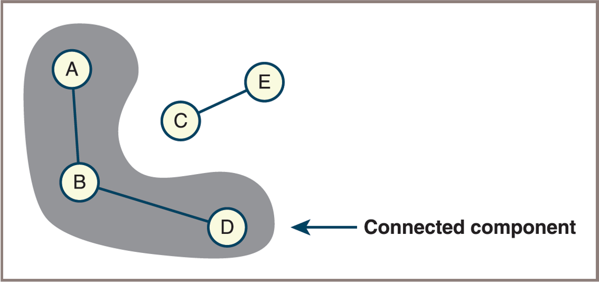
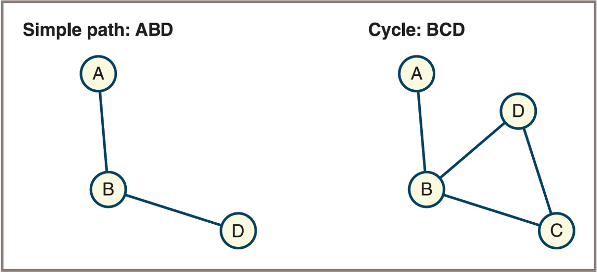
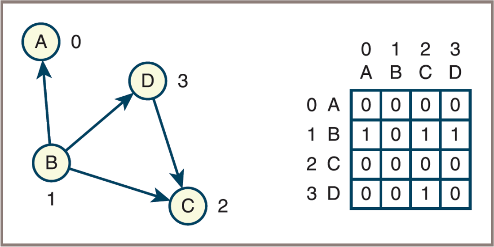
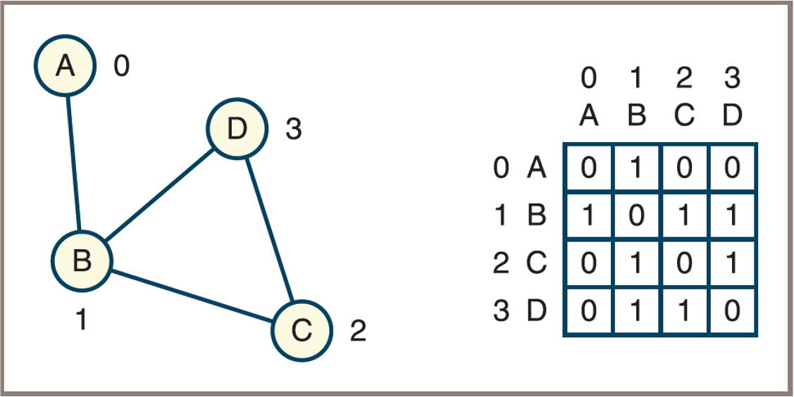
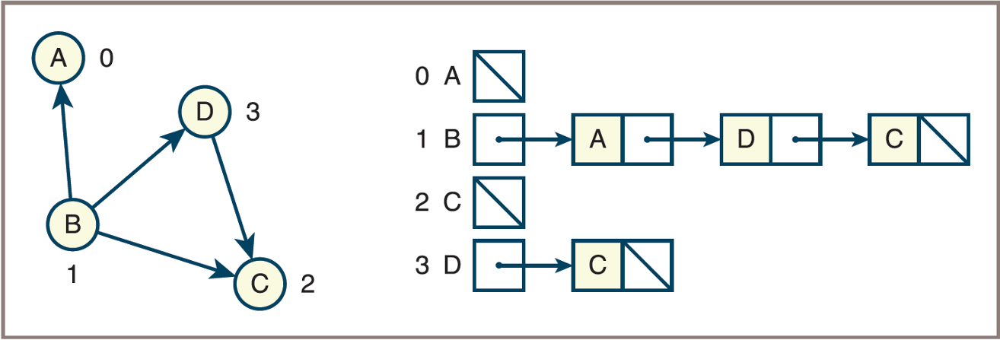
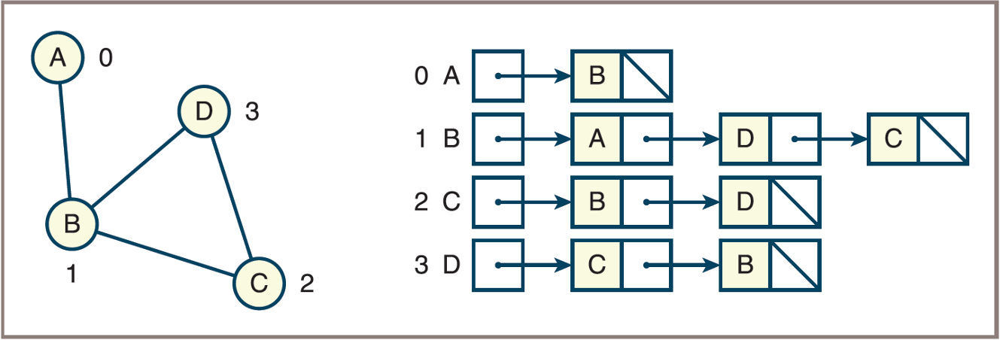

GRAPH STRUCTURE
Fred Agbo
2025-11-10
Announcements
- PS5 is due today.
- Grading of PS4 is ongoing
- No class this Wednesday November 12
- Prof. Agbo is away for a conference
- Mini Project #3 to be posted today and due on Monday November 24th
- Use class time on Wednesday to solve the mini-project
- Submission due date is long but other assignments will be givien inbetween
Graphs: Learning Objectives
- Describe the features of a graph
- Describe various types of graph traversals
- Recognize applications where it is appropriate to use a graph
- Choose an appropriate implementation of a graph, based on its performance characteristics
- Develop algorithms for processing graphs
Why Use Graphs?
- Model relationships between entities (e.g., social networks, web pages)
- A roadmap
- A map of airline routes
- A layout of an adventure game world
- Represent networks (e.g., transportation, communication, utilities)
- Solve problems involving connectivity, paths, and cycles
- Analyze dependencies (e.g., scheduling, project management)
- Efficiently store and process complex data structures
Why Use Graphs?
- Primary Feature of Graphs
- Consist of a set of objects connected by
links - Allow the user to navigate from one object to another
- Consist of a set of objects connected by
- The graph is the most general category of collection:
- Encompasses the linear, hierarchical, and unordered collections as special cases
More Feature of Graphs
- Graphs are data structures that consist of:
- Vertices (nodes): Represent entities.
- Edges (links): Represent relationships or connections between entities.
- Can be directed or undirected.
- Can be weighted or unweighted.
- Allow modeling of complex relationships and interactions.
Graph Terminology (1 of 12)
- A graph is a set
Vofverticesand a setEofedges: - Each
edgeinEconnects two of theverticesinV Node- Used as a synonym for
vertex Verticesandedgescan be labeled or unlabeled:- When edges are labeled with numbers, the numbers can be viewed as
weights(known as aweightedgraph)
- Used as a synonym for
Graph Terminology (2 of 12)

Unlabeled, labeled, and weighted graphs

Graph Terminology (3 of 12)
- One vertex is
vto another if there is anedgeconnecting the two vertices:- These two vertices are also called
neighbors
- These two vertices are also called
- A
pathis a sequence of edges that allows one vertex to be reached from another vertex in a graph - A vertex is
reachablefrom another vertex if there is a path between the two:Lengthof a path is the number of edges on the path
- A graph is
connectedif there is a path from each vertex to every other vertex - A graph is
completeif there is an edge from each vertex to every other vertex
Graph Terminology (4 of 12)

- Disconnected, connected but not complete, and complete graphs

Graph Terminology (5 of 12)
- The degree of a vertex is equal to the number of edges connected to it
- Vertices with degree 0 are called isolated vertices
- A subgraph of a given graph consists of a subset of that graph’s vertices and the edges connecting those vertices
- Subgraphs can be used to analyze or focus on specific parts of a larger graph
- A spanning subgraph contains all the vertices of the original graph and a subset of its edges
- A connected component is a
subgraphconsisting of the set of vertices that are reachable from a given vertex
Graph Terminology (6 of 12)
- A simple path is a path that does not pass through the same vertex more than once
- A cycle is a path that starts and ends at the same vertex, with no repeated edges or vertices (except the starting/ending vertex)
- An acyclic graph is a graph that contains no cycles
- A tree is a connected acyclic graph
Graph Terminology (7 of 12)
- A connected component of a graph
- 
Graph Terminology (8 of 12)
- A simple path and a cycle
- 
Graph Terminology (9 of 12)
- Directed Graph (
Diagraph): Edges have a direction, going from one vertex to another (such as one-way streets).- Each edge is an ordered pair (u, v).
- Useful for modeling relationships where direction matters (e.g., Twitter followers, web links).
- Undirected Graph: Edges do not have direction; they simply connect two vertices (such as two-way streets).
- Each edge is an unordered pair {u, v}.
- Used when relationships are mutual (e.g., Facebook friends, road networks).
Graph Terminology (8 of 12)
- A simple path and a cycle


Graph Terminology (9 of 12)
- Each edge in a digraph is called a
directed edge- It has a
source vertexand adestination vertex
- It has a
- When there is only one directed edge connecting two vertices, the vertices are in the relation of a predecessor (the source vertex) and a successor (the destination vertex):
- The relation of adjacency between them is asymmetric
- The edges emanating from a given source vertex are called its incident edges
Graph Terminology (10 of 12)
- Converting an undirected graph to a directed graph


Graph Terminology (11 of 12)
- Directed Acyclic Graph (DAG):
- A directed graph with no cycles.
- Used to model processes with dependencies (e.g., scheduling tasks, version control, data processing pipelines).
- In a DAG, it is impossible to start at a vertex and follow a sequence of directed edges that eventually loops back to the starting vertex.
- Many algorithms (such as topological sorting) are designed specifically for DAGs.
- Dense Graph:
- Has nearly the maximum possible number of edges; most vertices are interconnected.
- Sparse Graph:
- Has far fewer edges than possible; most vertices are not directly connected.
Graph Terminology (12 of 12)
- A directed graph and a directed acyclic graph (
DAG) 

Representations of Graphs
- To represent graphs, you need a convenient way to store the vertices and the edges that connect them
- Two commonly used representations of graphs are the
adjacency matrixandadjacency list - Adjacency Matrix:
- A 2D array where each cell (i, j) indicates if there is an edge between vertex i and vertex j.
- Efficient for dense graphs.
- Space complexity: O(n²), where n is the number of vertices.
- Adjacency List:
- Each vertex has a list of adjacent vertices.
- Efficient for sparse graphs.
- Space complexity: O(n + e), where e is the number of edges.
Adjacency Matrix
Assume that a graph has
Nvertices labeled 0, 1, …, N − 1, and then the following applies:The adjacency matrix for the graph is a grid G with
Nrows andNcolumnsThe cell G[i][j] contains
1if there is an edge from vertex i to vertex j in the graph; otherwise, there is no edge, and that cell contains0
Adjacency Matrix
- A directed graph and its adjacency matrix
- 
Adjacency Matrix
- An undirected graph and its adjacency matrix
- 
Adjacency List
- Assume that a graph has
Nvertices labeled 0, 1, …, N − 1, and then the following applies:- The adjacency list for the graph is an array of
Nlinked lists - The
ithlinked list contains a node for vertexjif and only if there is an edge from vertexito vertexj
- The adjacency list for the graph is an array of
Adjacency List
- A directed graph and its adjacency list
- 
Adjacency List
- An undirected graph and its adjacency list
- 
Adjacency List
- A weighted, directed graph and its adjacency list


Analysis of the Two Representations
- Regarding running time,
- The behavior of two commonly used graph operations illustrates the difference in computational efficiency between the adjacency matrix and the adjacency list
- These operations are the following:
- Determine whether or not there is an edge between two given vertices
- Find all the vertices adjacent to a given vertex
- The adjacency matrix supports the first operation in constant time:
- It requires just an index operation into a two-dimensional array
- The linked adjacency list requires an index into an array of linked lists and then a search of a linked list for a target vertex
Analysis of the Two Representations
- The adjacency list tends to support finding all the vertices adjacent to a given vertex more efficiently than the adjacency matrix
- The linked adjacency list and the array-based adjacency list exhibit performance trade-offs for insertions of edges into the lists:
- The array-based insertion takes linear time, whereas the linked-based insertion requires constant time
- Regarding memory
- Adjacency matrix always requires \(N^2\) cells, no matter how many edges connect the vertices
- Adjacency list requires an array of N pointers and a number of nodes equal to twice the number of edges in the case of an undirected graph
Further Run-Time Considerations
- Another commonly performed operation in graph algorithms is to iterate across all the neighbors of a given vertex
- Let
N= number of vertices andM= number of edges, then the following applies:- Using an adjacency matrix to iterate across all neighbors, you must traverse a row in a time that is O(N): To repeat this for all rows is \(O(N^2)\)
- Using an adjacency list, the time to traverse across all neighbors depends on the number of neighbors:
- On the average, this time is O(M/N)
- To repeat this for all vertices is O(max(M, N)), which for a dense graph is \(O(N^2)\) and for a sparse graph is O(N)
- Thus, adjacency lists can provide a run-time advantage when working with sparse graphs